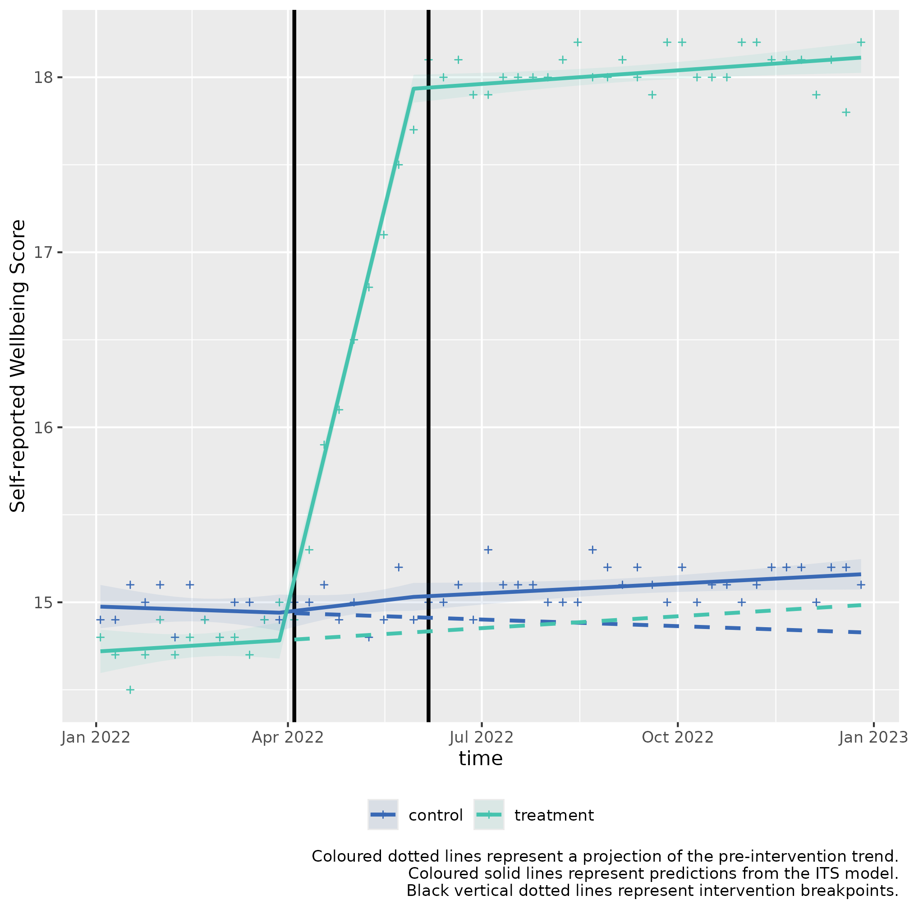

Multiple ITS control introduction for slope change 2nd example (two-stage)
ITScontrol_demonstration_slope2.RmdUsage
This is a basic example which shows you how to solve a common problem with two stage interrupted time series with a control for a slope hypothesis:
Background: Albridge Medical Practice and Hollybush Medical Practice are two medical practices within the same PCN, with similar populations of people, and prevalence of disease.
Albridge Medical Practice wants to try a new intervention to improve wellbeing in people diagnosed with depression in their practice.
This example is for scenarios where there is a statistically significant slope change for both interventions, but no level change.
Intervention 1: Implementing a new Mental Health Support programme
- Objective: Improve mental wellbeing in patients with low-to-mid level depression.
- Start Date: April 4, 2022
- Duration: 2 months
- Description: The practice introduced weekly Mindfulness Workshops, teaching meditation and breathing techniques to improve self-regulation.
- Measurement: Self-reported wellbeing scores measured at start and end of intervention.
Intervention 2: Introducing AI led CBT session
- Objective: Further increase self-reported wellbeing scores.
- Start Date: June 6, 2022 (immediately after the intervention 1 program ends)
- Duration: 6 months
- Description: The practice implements cognitive behavioural therapy (CBT) sessions, aimed at changing negative thought patterns and behaviours.
- Measurement: Self-reported wellbeing scores measured at start and end of intervention.
Controlled Interrupted Time Series Design (2 stage)
Step 1: Baseline Period
- Duration: 3 months (Jan 1, 2022 - April 3, 2022)
- Data Collection: Collect self-reported wellbeing scores.
Step 2: Intervention 1 Period
- Duration: 2 months (April 4, 2022 - June 5, 2022)
- Data Collection: Continue collecting self-reported wellbeing scores at end of workshops.
Step 3: Intervention 2 Period
- Duration: 6 months (June 6, 2022 - Dec 31, 2022)
- Data Collection: Continue collecting self-reported wellbeing scores at end of CBT.
The calendar plot below summarises the timeline of the interventions:

Step 1) Loading data
Sample data can be loaded from the package for this scenario through
the bundled dataset its_data_gp.
This sample dataset demonstrates the format your own data should be in.
You can observe that in the Date column, that the dates
are of equal distance between each element, and that there are two rows
for each date, corresponding to either control or
treatment in the group_var variable.
control and treatment each have three periods,
a Pre-intervention period detailing measurements of the
outcome prior to any intervention, the first intervention detailed by
Intervention 1) Implementing a new Mental Health Support programme,
and the second intervention, detailed by
Intervention 2) Introducing CBT session.
Step 2) Transforming the data
The data frame should be passed to
multipleITScontrol::tranform_data() with suitable arguments
selected, specifying the names of the columns to the required variables
and starting intervention time points.
intervention_dates <- c(as.Date("2022-04-04"), as.Date("2022-06-06"))
transformed_data <-
multipleITScontrol::transform_data(df = its_data_gp,
time_var = "Date",
group_var = "group_var",
outcome_var = "score",
intervention_dates = intervention_dates)Returns the initial data frame with a few transformed variables needed for interrupted time series.
#> # A tibble: 104 × 13
#> # Groups: category [2]
#> time category Period outcome x time_index level_pre_intervention
#> <date> <chr> <chr> <dbl> <dbl> <int> <dbl>
#> 1 2022-01-03 treatment Pre-int… 14.8 1 1 1
#> 2 2022-01-03 control Pre-int… 14.9 0 1 1
#> 3 2022-01-10 treatment Pre-int… 14.7 1 2 1
#> 4 2022-01-10 control Pre-int… 14.9 0 2 1
#> 5 2022-01-17 treatment Pre-int… 14.5 1 3 1
#> 6 2022-01-17 control Pre-int… 15.1 0 3 1
#> 7 2022-01-24 treatment Pre-int… 14.7 1 4 1
#> 8 2022-01-24 control Pre-int… 15 0 4 1
#> 9 2022-01-31 treatment Pre-int… 14.9 1 5 1
#> 10 2022-01-31 control Pre-int… 15.1 0 5 1
#> # ℹ 94 more rows
#> # ℹ 6 more variables: level_1_intervention <dbl>,
#> # level_1_intervention_internal <dbl>, slope_1_intervention <dbl>,
#> # level_2_intervention <dbl>, level_2_intervention_internal <dbl>,
#> # slope_2_intervention <dbl>Step 3) Fitting ITS model
The transformed data is then fit using
multipleITScontrol::fit_its_model(). Required arguments are
transformed_data, which is simply an unmodified object
created from multipleITScontrol::transform_data() in the
step above; a defined impact model, with current options being either
‘slope’, `level, or ‘levelslope’, and the
number of interventions.
fitted_ITS_model <-
multipleITScontrol::fit_its_model(transformed_data = transformed_data,
impact_model = "slope",
num_interventions = 2)
fitted_ITS_modelGives a conventional model output from nlme::gls().
#> Generalized least squares fit by REML
#> Model: reformulate(termlabels = termlabels, response = "outcome")
#> Data: transformed_data
#> Log-restricted-likelihood: 47.55279
#>
#> Coefficients:
#> (Intercept) x time_index
#> 14.978016984 -0.263236823 -0.002879616
#> slope_1_intervention slope_2_intervention x:time_index
#> 0.012902492 -0.005716956 0.008051684
#> x:slope_1_intervention x:slope_2_intervention
#> 0.332225275 -0.338670698
#>
#> Correlation Structure: ARMA(2,4)
#> Formula: ~time_index | x
#> Parameter estimate(s):
#> Phi1 Phi2 Theta1 Theta2 Theta3 Theta4
#> 0.15442129 0.06585948 0.10983083 0.02821116 -0.70450272 0.31638804
#> Degrees of freedom: 104 total; 96 residual
#> Residual standard error: 0.1161496Step 4) Analysing ITS model
However, the coefficients given do not make intuitive sense to a lay
person. We can call the package’s internal
multipleITScontrol::summary_its() which modifies the
summary output by renaming the coefficients to make them easier to
interpret in the context of interrupted time series (ITS) analysis.
my_summary_its_model <- multipleITScontrol::summary_its(fitted_ITS_model)
my_summary_its_model#> Generalized least squares fit by REML
#> Model: reformulate(termlabels = termlabels, response = "outcome")
#> Data: transformed_data
#> Log-restricted-likelihood: 47.55279
#>
#> Coefficients:
#> A) Control y-axis intercept
#> 14.978016984
#> B) Pilot y-axis intercept difference to control
#> -0.263236823
#> C) Control pre-intervention slope
#> -0.002879616
#> E) Control intervention 1 slope
#> 0.012902492
#> I) Control intervention 2 slope
#> -0.005716956
#> D) Pilot pre-intervention slope difference to control
#> 0.008051684
#> F) Pilot intervention 1 slope
#> 0.332225275
#> J) Pilot intervention 2 slope
#> -0.338670698
#>
#> Correlation Structure: ARMA(2,4)
#> Formula: ~time_index | x
#> Parameter estimate(s):
#> Phi1 Phi2 Theta1 Theta2 Theta3 Theta4
#> 0.15442129 0.06585948 0.10983083 0.02821116 -0.70450272 0.31638804
#> Degrees of freedom: 104 total; 96 residual
#> Residual standard error: 0.1161496
summary(my_summary_its_model)#> Generalized least squares fit by REML
#> Model: reformulate(termlabels = termlabels, response = "outcome")
#> Data: transformed_data
#> AIC BIC logLik
#> -65.10558 -26.64035 47.55279
#>
#> Correlation Structure: ARMA(2,4)
#> Formula: ~time_index | x
#> Parameter estimate(s):
#> Phi1 Phi2 Theta1 Theta2 Theta3 Theta4
#> 0.15442129 0.06585948 0.10983083 0.02821116 -0.70450272 0.31638804
#>
#> Coefficients:
#> Value Std.Error
#> A) Control y-axis intercept 14.978017 0.07014826
#> B) Pilot y-axis intercept difference to control -0.263237 0.09920463
#> C) Control pre-intervention slope -0.002880 0.00789916
#> E) Control intervention 1 slope 0.012902 0.01439202
#> I) Control intervention 2 slope -0.005717 0.00954899
#> D) Pilot pre-intervention slope difference to control 0.008052 0.01117111
#> F) Pilot intervention 1 slope 0.332225 0.02035339
#> J) Pilot intervention 2 slope -0.338671 0.01350431
#> t-value p-value
#> A) Control y-axis intercept 213.51942 0.0000
#> B) Pilot y-axis intercept difference to control -2.65347 0.0093
#> C) Control pre-intervention slope -0.36455 0.7163
#> E) Control intervention 1 slope 0.89650 0.3722
#> I) Control intervention 2 slope -0.59870 0.5508
#> D) Pilot pre-intervention slope difference to control 0.72076 0.4728
#> F) Pilot intervention 1 slope 16.32285 0.0000
#> J) Pilot intervention 2 slope -25.07872 0.0000
#>
#> Correlation:
#> A)Cy-i BPyidtc C)Cp-s
#> B) Pilot y-axis intercept difference to control -0.707
#> C) Control pre-intervention slope -0.879 0.622
#> E) Control intervention 1 slope 0.657 -0.465 -0.905
#> I) Control intervention 2 slope -0.277 0.196 0.563
#> D) Pilot pre-intervention slope difference to control 0.622 -0.879 -0.707
#> F) Pilot intervention 1 slope -0.465 0.657 0.640
#> J) Pilot intervention 2 slope 0.196 -0.277 -0.398
#> E)Ci1s I)Ci2s DPpsdtc
#> B) Pilot y-axis intercept difference to control
#> C) Control pre-intervention slope
#> E) Control intervention 1 slope
#> I) Control intervention 2 slope -0.852
#> D) Pilot pre-intervention slope difference to control 0.640 -0.398
#> F) Pilot intervention 1 slope -0.707 0.602 -0.905
#> J) Pilot intervention 2 slope 0.602 -0.707 0.563
#> F)Pi1s
#> B) Pilot y-axis intercept difference to control
#> C) Control pre-intervention slope
#> E) Control intervention 1 slope
#> I) Control intervention 2 slope
#> D) Pilot pre-intervention slope difference to control
#> F) Pilot intervention 1 slope
#> J) Pilot intervention 2 slope -0.852
#>
#> Standardized residuals:
#> numeric(0)
#> attr(,"label")
#> [1] "Standardized residuals"
#>
#> Residual standard error: 0.1161496
#> Degrees of freedom: 104 total; 96 residual
sjPlot::tab_model(
my_summary_its_model,
dv.labels = "Self-reported Wellbeing Score",
show.se = TRUE,
collapse.se = TRUE,
linebreak = FALSE,
string.est = "Estimate (std. error)",
string.ci = "95% CI",
p.style = "numeric_stars"
)| Self-reported Wellbeing Score | |||
|---|---|---|---|
| Predictors | Estimate (std. error) | 95% CI | p |
|
14.98 *** (0.07) | 14.84 – 15.12 | <0.001 |
|
-0.26 ** (0.10) | -0.46 – -0.07 | 0.009 |
|
-0.00 (0.01) | -0.02 – 0.01 | 0.716 |
|
0.01 (0.01) | -0.02 – 0.04 | 0.372 |
|
-0.01 (0.01) | -0.02 – 0.01 | 0.551 |
|
0.01 (0.01) | -0.01 – 0.03 | 0.473 |
|
0.33 *** (0.02) | 0.29 – 0.37 | <0.001 |
|
-0.34 *** (0.01) | -0.37 – -0.31 | <0.001 |
| Observations | 104 | ||
| R2 | 0.994 | ||
|
|||
The predictor coefficients elucidate a few things:
Pre-intervention period:
At the start of the pre-intervention period, A) Control y-axis intercept represents the modelled starting score of Hollybush Medical Practice, 14.98.
C) Control pre-intervention slope describes the pre-intervention slope in the control group (0).
D) Pilot pre-intervention slope difference to control describes the difference in the pre-intervention slope in the pilot group with the control group. This coefficient is additive to C) Control pre-intervention slope. I.e. 0 (C) + 0.01 (D) = 0.01 is the pre-intervention slope per x-axis unit in the pilot data.
First intervention:
E) Control intervention 1 slope describes the slope change that occurs at the intervention break point in the control group at the start of the first intervention, compared to it’s pre-intervention period (0.01).
F) Pilot intervention 1 slope describes the difference in the slope change that occurs at the intervention timepoint in the pilot group for the first intervention compared to the control (0.33).
These slope changes are pertinent to the slope gradients given in the pre-intervention period. Thus, we add the coefficients E) Control intervention 1 slope to C) Control pre-intervention slope: 0.01 + 0 = 0.01 is the average increase for each x-axis unit during the first intervention for the control data.
To ascertain the slope for the pilot data, we add to the pre-intervention slope of the pilot data, the coefficients E) Control intervention 1 slope and F) Pilot intervention 1 slope. E (0.01) + F (0.33) + (C) 0 + D 0.01 (D) = 0.35 is the average increase for each x-axis unit during the first intervention for the pilot data.
To ascertain statistical significance with the first intervention
slope, we call the function’s
multipleITScontrol::slope_difference().
slope_difference(model = my_summary_its_model, intervention = 1)#> ## INTERVENTION 1 ##
#>
#> Slope for treatment per x-axis unit: 0.35
#> Slope for control per x-axis unit: 0.01
#> Slope difference: 0.34
#> 95% CI: 0.32 to 0.36
#> p-value: <0.001
#> Slope control coefficients: E+C
#> Slope treatment coefficients: E+C+D+F
#>
#> # A tibble: 9 × 3
#> Variable Value_Raw Value_Formatted
#> <chr> <dbl> <chr>
#> 1 Intervention 1 e+ 0 1
#> 2 Slope for treatment 3.50e- 1 0.35
#> 3 Slope for control 1.00e- 2 0.01
#> 4 Slope difference 3.40e- 1 0.34
#> 5 Lower 95% CI 3.18e- 1 0.32
#> 6 Upper 95% CI 3.63e- 1 0.36
#> 7 p.value 9.80e-51 <0.001
#> 8 Slope treatment coefficients NA E+C+D+F
#> 9 Slope control coefficients NA E+CThis brings up the key coefficients and values needed to compare the slopes of the pilot and control during the first intervention.
We identify that the slope difference between the treatment (Albridge Medical Practice) and the control (Hollybush Medical Practice) for the first intervention (Reading Programme) has a slope difference of 0.34 (95% CI: 0.32 - 0.36) per x-axis unit, with a p-value of <0.001, indicating statistical significance.
Second intervention:
I) Control intervention 2 slope describes the slope change that occurs at the intervention break point in the control group at the start of the second intervention (-0.01).
Thus, the modelled slope change in the second intervention is C) Control pre-intervention slope (0) + E) Control intervention 1 slope (0.01) + I) Control intervention 2 slope (-0.01) = 0 is the average cumulative uptake increase for each x-axis unit during the second intervention for the control data.
J) Pilot intervention 2 slope describes the difference in the slope change that occurs at the intervention timepoint in the pilot group for the second intervention. (-0.34).
These slope changes are pertinent to the slope gradients given in the pre-intervention and first intervention period. Thus, we add the coefficients C (0) + D (0.01) + E (0.01) + F (0.33) + I (-0.01) + J (-0.34) = 0 is the average cumulative increase for each x-axis unit during the second intervention for the pilot data.
To ascertain statistical significance with the second intervention
slope, we call the function’s
multipleITScontrol::slope_difference() again, but change
the intervention parameter.
slope_difference(model = my_summary_its_model, intervention = 2)#> ## INTERVENTION 2 ##
#>
#> Slope for treatment per x-axis unit: 0.01
#> Slope for control per x-axis unit: 0
#> Slope difference: 0
#> 95% CI: -0.01 to 0.01
#> p-value: 0.636
#> Slope control coefficients: E+C+I
#> Slope treatment coefficients: E+C+D+F+I+J
#>
#> # A tibble: 9 × 3
#> Variable Value_Raw Value_Formatted
#> <chr> <dbl> <chr>
#> 1 Intervention 2 2
#> 2 Slope for treatment 0.00591 0.01
#> 3 Slope for control 0.00431 0
#> 4 Slope difference 0.00161 0
#> 5 Lower 95% CI -0.00511 -0.01
#> 6 Upper 95% CI 0.00832 0.01
#> 7 p.value 0.636 0.636
#> 8 Slope treatment coefficients NA E+C+D+F+I+J
#> 9 Slope control coefficients NA E+C+IWe identify that the slope difference between the treatment (Albridge Medical Practice) and the control (Hollybush Medical Practice) for the second intervention (Reading Programme) has a slope difference of 0 (95% CI: -0.01 - 0.01) per x-axis unit, with a p-value of 0.636, indicating a non statistically significant result. The effect has been attenuated compared to the first intervention, and this is evident from the plot in step 6.
Step 5) Fitting Predictions
We can fit predictions with the created model which project the
pre-intervention period into the post-intervention period by using the
model coefficients using
multipleITScontrol::generate_predictions().
transformed_data_with_predictions <- generate_predictions(transformed_data, fitted_ITS_model)
transformed_data_with_predictionsStep 6) Plotting the results
We can use the predicted values and map the segmented regression lines which compare whether an intervention had a statistically significant difference.
its_plot(model = my_summary_its_model,
data_with_predictions = transformed_data_with_predictions,
time_var = "time",
intervention_dates = intervention_dates,
y_axis = "Self-reported Wellbeing Score")
In this example, the treatment variable is for Albridge Medical Practice, whilst the control is for Hollybush Medical Practice. The treatment slope shows there was a significant slope change immediately after the first intervention in April 2022, but not in the second intervention in June 2022.